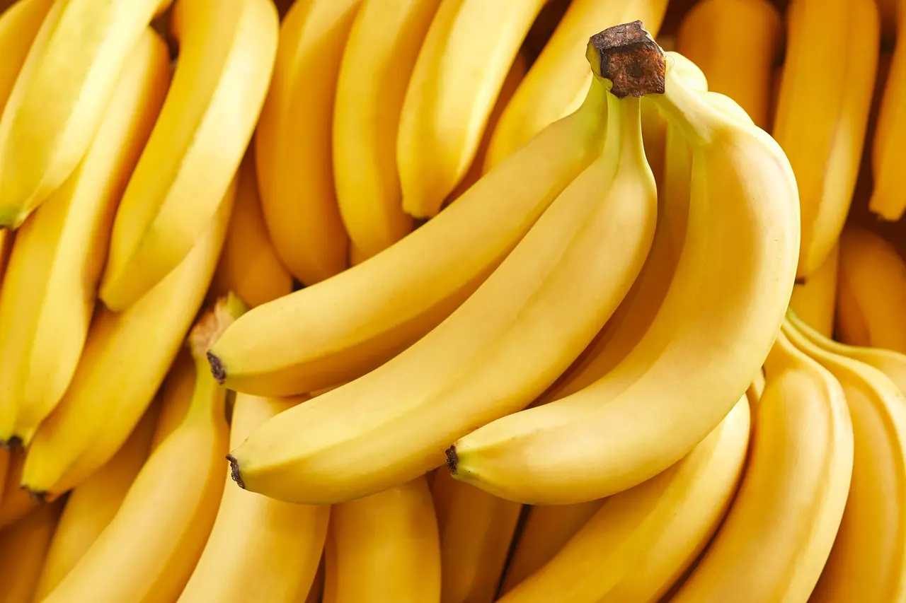

Nova Planta
Clique para selecionar imagem
Explore, descubra e aprenda sobre a biodiversidade vegetal do campus. Um inventário botânico interativo feito por alunos, para alunos.
Envie uma imagem e nossa IA sugere a espécie
Marcadores agrupados com precisão GPS
Por tipo, local, característica e proximidade
Estatísticas e gráficos da biodiversidade
Clique no mapa para cadastrar novas espécies
Todas as espécies mapeadas no campus
Plantas que você salvou
Estatísticas da biodiversidade do campus
O BioMap Campus é um projeto de educação ambiental desenvolvido por estudantes com o objetivo de inventariar, documentar e valorizar a biodiversidade vegetal do campus do IFES.
Acreditamos que conhecer as plantas ao nosso redor é o primeiro passo para protegê-las. Este mapeamento serve como ferramenta pedagógica e de conscientização ambiental para toda a comunidade escolar.

Envie uma foto da planta e nossa IA tentará identificá-la com base no banco de dados do campus.